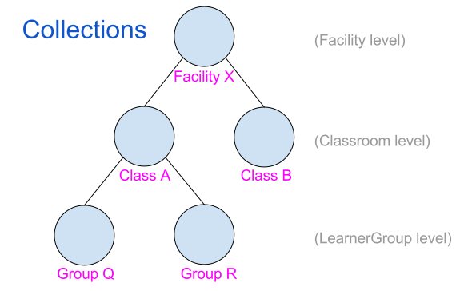
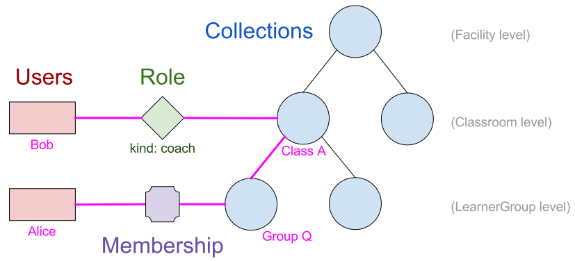
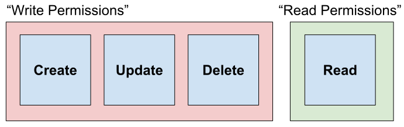

Concepts and Definitions¶
Facility¶
All user data (accounts, logs, ratings, etc) in Kolibri are associated with a particular “Facility”. A Facility is a grouping of users who are physically co-located, and who generally access Kolibri from the same server on a local network, for example in a school, library, or community center. Collectively, all the data associated with a particular Facility are referred to as a “Facility Dataset”.
Users¶
There are two kinds of users: FacilityUser and DeviceOwner. A
FacilityUser is associated with a particular Facility, and the user’s
account and data may be synchronized across multiple devices. A
DeviceOwner account is not associated with a particular Facility, but
is specific to one device, and is never synchronized across multiple devices.
A DeviceOwner is like a superuser, and has permissions to modify any data
on her own device, whereas a FacilityUser only has permissions for some
subset of data from their own Facility Dataset (as determined in part by the
roles they possess; see below).
Collections¶
Collections are hierarchical groups of users, used for grouping users and making decisions about permissions. Users can have roles for one or more Collections, by way of obtaining Roles associated with those Collections. Collections can belong to other Collections, and user membership in a collection is conferred through Membership. Collections are subdivided into several pre-defined levels: Facility, Classroom, and LearnerGroup, as illustrated here:
In this illustration, Facility X contains two Classrooms, Class A and Class B. Class A contains two LearnerGroups, Group Q and Group R.
Membership¶
A FacilityUser (but not a DeviceOwner) can be marked as a member of a
Collection through a Membership object. Being a member of a Collection
also means being a member of all the Collections above that Collection in the
hierarchy. Thus, in the illustration below, Alice is directly associated with
Group Q through a Membership object, which makes her a member of Group Q.
As Group Q is contained within Class A, which is contained within Facility X,
she is also implicitly a member of both those collections.
Note also that a FacilityUser is always implicitly a member of the
Facility with which it is associated, even if it does not have any
Membership objects.
Roles¶
Another way in which a FacilityUser can be associated with a particular
Collection is through a Role object, which grants the user a role with
respect to the Collection and all the collections below it. A Role
object also stores the “kind” of the role (currently, one of “admin” or
“coach”), which affects what permissions the user gains through the Role.
To illustrate, consider the example in the following figure:
The figure shows a Role object linking Bob with Class A, and the Role is marked with kind “coach”, which we can informally read as “Bob is a coach for Class A”. We consider user roles to be “downward-transitive” (meaning if you have a role for a collection, you also have that role for descendents of that collection). Thus, in our example, we can say that “Bob is also a coach for Group Q”. Furthermore, as Alice is a member of Group Q, we can say that “Bob is a coach for Alice”.
Role-Based Permissions¶
As a lot of Facility Data in Kolibri is associated with a particular
FacilityUser, for many objects we can concisely define a requesting user’s
permissions in terms of his or her roles for the object’s associated User. For
example, if a ContentLog represents a particular FacilityUser‘s
interaction with a piece of content, we might decide that another
FacilityUser can view the ContentLog if she is a coach (has the coach
role) for the user. In our scenario above, this would mean that Bob would have
read permissions for a ContentLog for which “user=Alice”, by virtue of
having the coach role for Alice.
Some data may not be related to a particular user, but rather with a
Collection (e.g. the Collection object itself, settings for a
Collection, or content assignments for a Collection). Permissions for
these objects can be defined in terms of the role the requesting User has with
respect to the object’s associated Collection. So, for example, we might allow
Bob to assign content to Class A on the basis of him having the “coach” role
for Class A.
Permission Levels¶
As we are constructing a RESTful API for accessing data within Kolibri, the core actions for which we need to define permissions are the CRUD operations (Create, Read, Update, Delete). As Create, Update, and Delete permissions often go hand in hand, we can collectively refer to them as “Write Permissions”.
